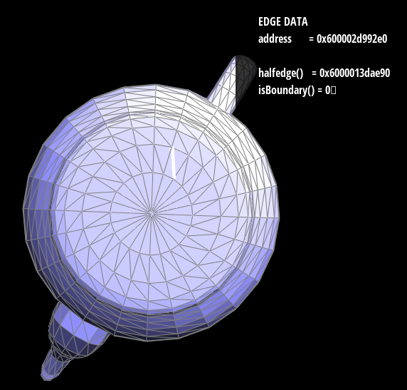
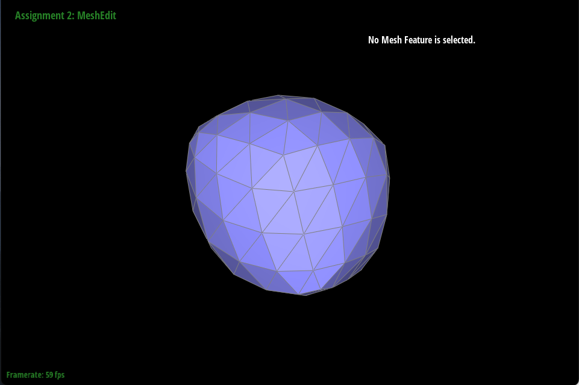

Project 2: Mesh Edit
CS 184: Computer Graphics and Imaging, Spring 2023
Project 1: Rasterizer
Overview
For this project, we implemented various algorithms related to the rendering of geometry, including the computation of Bezier curves and surfaces (in both 2D and 3D contexts), Phong shading, and manipulation of triangle meshes structured with the half-edge data structure. Reading through the specification, we initially thought the implementation would be straightforward. But unlike other forms of programming, the data structures rely on a physical structure difficult to portray in code, which made reading and writing the code a challenge. To convey what I mean, take a look at the code written for Task 5 and Task 6. They are full of long lists of seemingly mysterious statements, impossible to make sense of without an accompanying diagram. That being said, we found it satisfying overcoming these challenges and enjoying the final renderings.
Section I: Bezier Curves and Surfaces
Part 1: Bezier Curves with 1D de Casteljau Subdivision
The de Casteljau’s algorithm takes a set of \(n\) points and linear interpolates between each neighboring pair. We are given a value \(t\) between 0 and 1 to weight the linear interpolation. Once doing this, it’s obtained a new, smaller set of \(n - 1\) points, and repeats the process. That is, the algorithm is recursive. This continues until the base case: when there are only \(n = 1\) remaining points.
The final point is a given point on the Bezier curve defined by the orignal \(n\) (control) points. The point is associated with the given \(t\). To obtain all points for the Bezier curve, we’d need to run the algorithm for all \(t \in [0, 1]\). As a simplification, we check only \(t \in \{0 + 0.005n \; \colon \; 0 \leq n \leq 200 \}\) (this code is provided for us).
The evaluation of a single step of the algorithm for a given \(t\) takes place in BezierCurve::evaluateStep (where \(t\) is a member variable). It produces a list \(r\) of Vector2D points computed from a list of \(n\) control points \(p\) via the following computation. \[r[i] = \text{lerp}(p[i], p[i + 1], t) \tag{$i \leq 0 \leq n - 1$}\] As mentioned previously, \(r\) has \(n - 1\) points.
Showcase
Part 2: Bezier Surfaces with Separable 1D de Casteljau
For this part, we apply the above algorithm to Bezier surfaces. That is, given an \(n \times n\) array of control points and two interpolation parameters \(u\) and \(v\) (i.e., the equivalents of \(t\) in the previous step), we compute a Bezier curve for each row of the array using \(t = u\). That is, for each row, we obtained a point on the curve. From here, we collect these points and repeat the algorithm with these points as the control points. This final point gives the point on the Bezier Surface for the given \(u\) and \(v\) (as before, we must go through \(u\) and \(v\) in small increments, though this is handled by the provided code).
We implemented this by first writing a BezierPatch::evaluateStep function that handle Vector3D points instead of Vector2D points. This was a trivial change and the function evaluateStep could easily be made into a template function to avoid the need to write the function twice.
We then wrote the function to handle each row, BezierPatch::evaluate1D. This function simply calls BezierPatch::evaluateStep (the 3D form) repeatedly, each time passing in the returned points of the last call (or the initial points on the first step), until only one point is returned.
Lastly, we implemented BezierPatch::evaluate, which takes in double u and double v (the two interpolation parameters) and calls BezierPatch::evaluate1D for row in the control points (a member variable, controlPoints). It collects the points from the calls and calls BezierPatch::evaluate1D on the these points, giving the final point on the Bezier curve.
Showcase
Section II: Triangle Meshes and Half-Edge Data Structure
Part 3: Area-Weighted Vertex Normals
To compute the sum of area-weighted vertex normals, we traverse the neighboring triangles (via calls to next() and twin() using halfedges) of the given vertex, calling, normal() for each face. We sum the results in a vector \(s\) and return \[\frac{s}{\text{norm}(s)}.\]
Showcase
Part 4: Edge Flip
We first draw out the “before” and “after” diagrams of flipping. More specially, given a pair of triangles (a,b,c) and (c,b,d), we flip on their shared edge (b,c) to get a pair of new triangles (a,d,c) and (a,b,d), which give us the “before” and “after” diagrams. Then we collect all the elements from the “before” diagram and name them properly. In the end, we update all the pointers for all the mesh elements that are affected by the flipping operation to match the “after” diagram.

For debugging, we just went through our “before” and “after” diagrams to see if we have done everything correctly. Since there are a lot of elements to keep track of, it’s really easy to make tiny a mistake somewhere.
Part 5: Edge Split
We first draw out the “before” and “after” diagrams of splitting. More specially, given a pair of triangles (a,b,c) and (c,b,d), we add a new vertex m on the shared edge (b,c) to get four new triangles, (a,b,m), (a,m,c), (m,b,d), and (m,d,c) by adding edges between (a,m) and (m,d). This gives us the “before” and “after” diagrams. Then we collect all the elements from the “before” diagram and name them properly. In the end, we update all the pointers for all the mesh elements that are affected by the flipping operation to match the “after” diagram.

For debugging, very similar to what we did for task 4, we just went through our “before” and “after” diagrams to see if we have done everything correctly. Later we realized, we didn’t implement this task correctly. We redid the task completely and resolved the bug since it’s really hard to debug for this task.
Part 6: Loop Subdivision for Mesh Upsampling
We first compute the new positions for all the vertices in the original input mesh using the formula (1 - n * u) * original_position + u * original_neighbor_position_sum, where u is equal to 3/16 when n is equal to 3, and 3/(8n) otherwise. We iterate through the neighboring positions of each vertex to get the original_neighbor_position_sum. We then compute the vertex positions for vertices that are newly created by edge splitting and temporarily store them in the corresponding edge’s newPosition. We want to first do the computation on the mesh before the subdivision process because it’s easier to iterate through the original mesh that contains fewer elements. After we are done with the computations, we can split every edge in the mesh. We have an oldEdges object to store all the original edges so we don’t split the newly created edges and run into an indefinite loop. We iterate through oldEdges and split each edge inside. We also set the corresponding isNew variable for each edge in the for loop, where we set isNew to true if it’s a newly created edge, and to false if it was part of the original edges. Afterward, we flip all the edges with isNew equal to true. Finally, we iterate through all the vertices and update their position variable to be the value of their ``NewPosition variable. For debugging, it turned out it was a bug in task 5 that we didn’t catch that lead to some strange behavior in this task. So we redid task 5 completely and resolved the bug.

Based on Demo 1, we can tell that after each loop subdivision, the cube becomes more round. Some of the sharp corners and edges got pulled in and became very round, while others stay at their original positions. This is because we only have one edge on the diagonal of each face, and this will lead to asymmetry during the loop subdivision process. By splitting all the edges beforehand, we are able to get a completely symmetrical rounded cube because now the face will be subdivided in a symmetrical way.